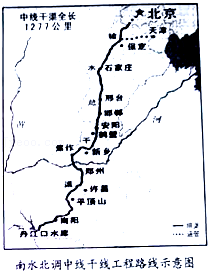

2015年北京市中考语文试题 · 现代文阅读 第13、14、15题
四、现代文阅读（共28分）
13．（8分）阅读下面两则材料，完成问题。
【材料一】
南水北调工程，是缓解我国北方水资源严重短缺局面的战略性基础设施，分东、中、西三条线路。东线、中线一期工程已分别于2013年和2014年通水，以南方充盈之水① （滋润 滋养）北方干渴大地的梦想已经实现。南水北调工程将发挥显著的社会效益、生态效益和经济效益。以中线一期工程为例，输送的距离长，流经的范围广，沿线经过多个大中城市，每年可输送的调水量达95亿立方米，相当于黄河水量的16，直接受益人口达6000万。根据需要，后期将进一步扩大调水规模，减少地下水开采，使水生态恶化的趋势得以缓解。随着受水区水资源生态的改善，影响北方经济发展的“瓶颈”将逐步消除，从而为这些地区经济结构调整创造机会和空间。
【材料二】
2014年12月27日，北京市南水北调工程正式通水。南水北调工程年均为北京送水12.4亿立方米，供水范围达6000平方公里，成为北京的主力水源，城市供水保证率将由75%提高到95%．此外，南水北调工程通水后，不仅减少北京重要水源地密云水库的出水量，还可以将富余来水调入密云水库存蓄，大大加强北京水资源战略储备。南水北调工程通水后，北京将逐步关闭大部分自备井，通过天然和人工② （回填 回补），有效遏制地下水位的大幅下降。同时，部分来水还可向首都的河湖补充清水，增强水体的稀释自净能力，改善河湖水质。
（1）从【材料一】和【材料二】横线后的括号内分别选择词语填入横线处，①处应填 ，②处应填 。
（2）请你根据“示意图”，对【材料一】中与图相关的文字信息进行具体说明。
答：
（3）下列三个选项，属于【材料一】和【材料二】共同说明内容的一项是 。（只填序号）
【甲】南水北调工程具有良好的经济效益
【乙】南水北调工程未来将产生更好效益
【丙】南水北调工程效益已全部提前实现。

14．（11分）阅读《超级智能住宅》，完成问题。
超级智能住宅
叶卡捷琳娜•奥迦涅香
住宅终于建成了。建造期间丈夫可操劳够了：一会这里有毛病，需要修改，一会儿那里有出了问题，需要设法解决……总之，没有片刻休息。好了，现在总算结束了，住宅竣工了，大功告成了。
住宅是丈夫为讨妻子欢心而建成的，因为妻子不爱收拾房间，而且觉得烹饪、洗涤特别麻烦，对于读服装设计的妻子来说，财务收支就更是世界上最痛苦的事情。
妻子对新住宅非常满意：清洁卫生，物品存放，三餐烹饪，衣服洗涤，财务收支……全由屋子包办，甚至当主任外出时，回信，接电话，迎来送往……也由屋子代办。
每天清晨，当和煦的阳光透过窗户泻进房间时，妻子会在睡梦中自然醒来。在她淋浴的时候，厨房已经准备好了丰盛的早餐：牛奶、红茶、咖啡等饮料应有尽有，烤麸面包、芝士蛋糕、水果沙拉等食品一应俱全。喝着香醇的咖啡，尝着酥软的面包，听着音乐播放器自动为她选择的曼妙音乐，妻子觉得早晨的时光无比美妙。早餐结束后，衣柜自动地为女主人选好了衣服，化妆台上自动推出名牌香水，妻子根本不用为服饰、化妆而发愁。
傍晚下班归来，不用掏钥匙，门顶上的智能识别仪会自动开门，客厅、餐厅等处的灯会自动亮起。花瓶里每天会有一只妻子喜欢的花朵自动开放，芬芳弥漫。晚餐是妻子最爱的普罗旺斯名菜，妻子在肖邦的钢琴声中呷着波尔多葡萄酒，工作一天后的疲惫感荡然无存。餐毕，她坐在书房里随意读书，书柜里比牛津大学图书馆的藏书还多。
妻子觉得这栋住宅棒极了！
可到第二个月月末，妻子的态度就全然变了。
“它不给我绿裙子，还说我只适合穿蓝色的！”她向丈夫告状。
丈夫决定先弄清楚事情的真想。
“听着，房子，你太放肆了！快打开衣柜，把那条绿裙子拿出来给太太。你听见了吗？”
房子没有回答，柜子也未见打开。
“唉，你为什么就不能穿蓝色的呢？”丈夫转向妻子。
“什么？就听从这么一堆钢筋混凝土的支配？穿什么都要由它来决定？不行，亲爱的，我是这里的主人。发号施令的，应该是我，而不是你的房子。房子快把那条绿裙子拿来给我！”
房子拿出的仍是蓝裙子。僵局持续了一个小时，妻子什么地方也不想去了，只把自己闷闷不乐地锁在房间里。
过了一周，女主人又跟房子争执起来。而这一次，她照样讨了个没趣。
又过了一周，妻子忍不住要离家出走。临行前她向丈夫摊牌：
“要么我留下，要么这鬼房子留下！”
“它哪里又得罪你啦？”丈夫大吃一惊。
“我要做我想做的事，而不是它想要我做的事；我要穿我想穿的衣服，而不是它想要我穿的衣服。总而言之，我要做我想做的一切。”
“亲爱的，它也是关心我们嘛。”
“关心？可绝不能违背我的意愿来干。它这绝不是关心，而是在任意摆布我们！”
“但是……”
“我已经说过，要么我留，要么它留！”
“可我总不能把一幢好端端的房子毁掉吧？”
“既然这样，那你就跟你好端端的房子过日子吧！在你心目中，它完全可以取代我。对此我已深信不疑！”
门“啪”的一声关上了。妻子毅然走了。
丈夫自我安慰着，傍晚她肯定就会回来的。可过了一天，又过了一天，直到第三天，妻子仍不见回来。
“房子，我要去找她！在我们回来之前，请做好一道她最爱吃的茄汁沙司，并摆好饭桌！”
他走到门跟前，可这一次门没有像往常那样自动打开。
“嗯？你怎么搞的？睡着啦？你这房子，快给我开门！”
门一动不动。他只好自己动手去推门，但门就是开不了。他干脆用肩头去撞，门依然不开。
“门呀，你怎么啦？我需要去找她呀！”
“你不必去找她了，她只会给你增添麻烦。”房子心平气和地劝说。
“房子，我需要她。房子，我爱她！开门啊，快开！”
房子默不作声，门紧闭不动。
他试着去开窗子，窗框好像也被钉死。他想用椅子把玻璃砸碎，可是笨重的窗帘却有意缠住了他的手，并把他手里的椅子夺掉。
“放开我！”他大声呵斥着。
“你没什么理由要出去，”房子回答，“你不需要她。我会照料你，直到你老死。”
“你说什么？想把我一辈子困在这里，一辈子？”他气冲冲地问。
“我会照料你的，你什么都不必操心。”
“我不需要你来照料，放开我！”
沉默。
他挣脱窗帘，来到房子中央，在这里窗帘已够不到他。他把手伸进衣袋，摸到了打火机。他取出打火机，“嚓”一下把火打着，说道：“你现在不把门打开，我就把你烧掉！”
“可你要知道，那样一来，我们将同归于尽。”
“即便如此，我也要把你毁掉！房子，你听到了吗？”
“还是把打火机关了吧。”
“快开门，否则我要烧了！”
“不开。”
“我烧死你！”
“你烧不了我的。”
这时从柜子里滚出了一个箱子……
……
（有删改）
（1）阅读小说，根据你对“超级智能住宅”的认识，在下面语段的横线处分别填入一个四字词语。
当房子刚建成时，房子的表现可以概括为体贴入微，当妻子提出自己的要求时，房子的表现可以概括为 ① ；当丈夫与房子矛盾激化时，房子的表现可以概括为 ② 。
（2）小说中的对话往往有推动故事情节发展的作用。请你选择一处对话，简要分析在推动情节发展中，这处对话所起的作用。
答：
（3）在你看来，这篇小说的主题是什么？根据你对小说主题的认识提出一个问题，并简要说明理由。
小说主题：
你的问题：
你的理由： 。
15．（9分）阅读《中华传统美德的时代价值》，完成问题。
中华传统美德的时代价值
①中华传统美德，是指中国五千年历史流传下来的优秀道德遗产，是中华民族千百年来处理人际关系以及人与社会关系的实践结晶，在加强社会主义道德建设的今天，仍然具有重要的时代价值。
②传统美德中最重视一个“忠”字。传统意义上的“忠”，虽然有忠于君主的糟粕成分，但更多的是对祖国的忠诚。屈原自投汩罗，张骞出使西域，戚继光抗倭，林则徐销烟……这些先贤的事迹之所以为人们世代传颂，就在于这种“忠”实际上促进了国家、民族发展。孙中山先生曾说：“现在说到忠于君，固然是不可为；说忠于国是可不可呢？忠于事又是可不可呢？我们做一件事，总要始终不渝，做到成功。如果做不成功，就是把生命去牺牲，亦所不惜，这便是忠。”今天弘扬“忠”，就是提倡每一个人既要热爱我们的文化、族群，又要忠于职守，尽心竭力做好每一件事。这种于国于事的担当意识，是实现民族复兴的强大动力。
③传统美德对促进人际和谐有积极作用。传统美德以仁爱为本，《论语》中的“己所不欲，勿施于人”，《孟子》中的“老吾老，以及人之老；幼吾幼，以及人之幼”①，都体现了这种仁爱美德。“仁者爱人”一个有仁爱之心的人，就必然为爱所驱使，为所爱的人奉献，关心他，爱护他。因此，这种美德是调节人际关系、保障社会和谐不可或缺的。近年来，一些人过分追求个人私利，导致了人际关系的冷漠与紧张，影响了社会的和谐与稳定，倡导仁爱，可以唤醒人们的道德良知，提升奉献意识，使人与人相互为善，彼此之间充满友爱。因此，充分汲取传统道德中的仁爱美德，即是净化社会风气的需要，也是实现社会和谐的需要。
④就个人而言，传统美德有助于为安身之命提供精神营养。读《陋室铭》可以知道，唐朝诗人刘禹锡，虽身处逆境却不改高洁的情操和乐观的人生态度，就是因为他在仕途失意、不能“兼善天下”时，便以“穷则独善其身”作为立身行事的准则，从而获得了“惟吾德馨”的精神回报和巨大的自我满足感。可见，中华传统美德，会为我们提供丰富的精神营养，进而转化成一种强大的精神力量。
⑤总之，今天的社会主义道德建设不是无源之水、无本之木，而是根植于民族文化的沃土，对传统美德的继承与升华。我们只有继承中华传统美德，赋予它新的时代内涵，才能促进社会道德体系的建设，将中华优秀传统美德发扬光大。
（选自肖群忠的同名文章，有删改）
【注】①[老吾老，以及人之老；幼吾幼，以及人之幼]出自《孟子•梁惠王上》．意思是尊敬自己的老人，并由此推及到尊敬其他的老人；爱护自己的孩子，并由此推及到爱护别人的孩子。
（1）读完这篇文章，对于传统美德的时代价值，你的认识是 。（不超过25字）
（2）阅读第②段，说说作者是如何阐述“忠”的时代价值的。
答：
（3）阅读第③段，结合生活实际，说一说你怎样理解“老吾老，以及人之老”的现实意义。
答： 。